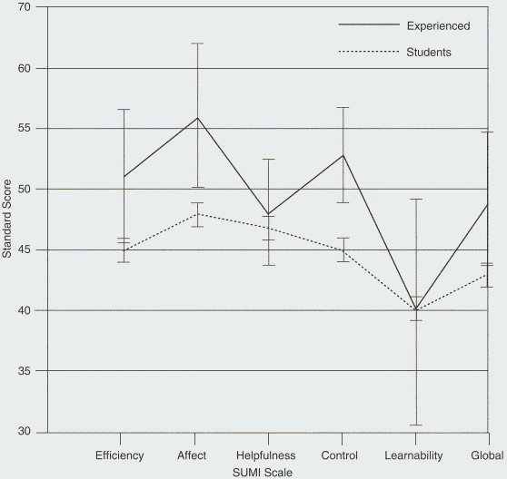
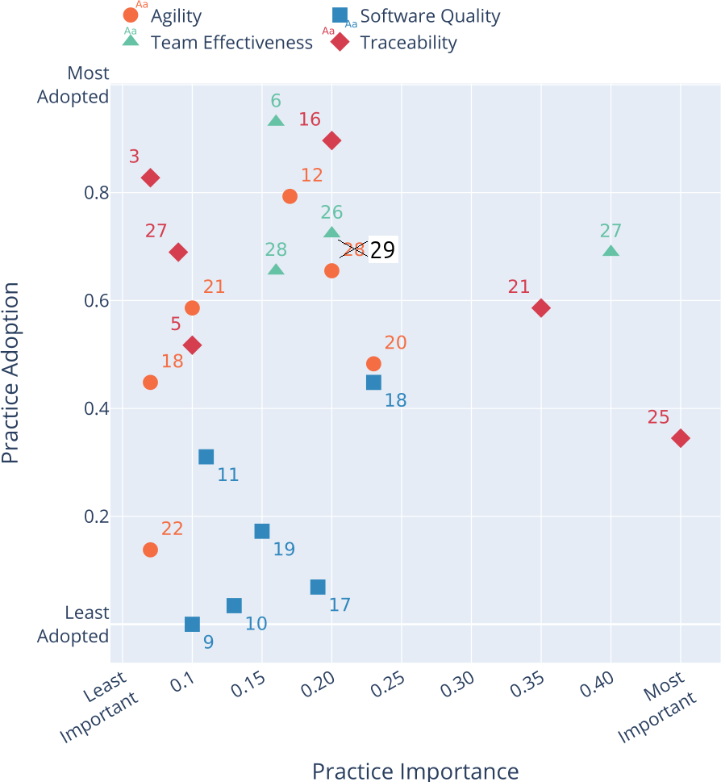
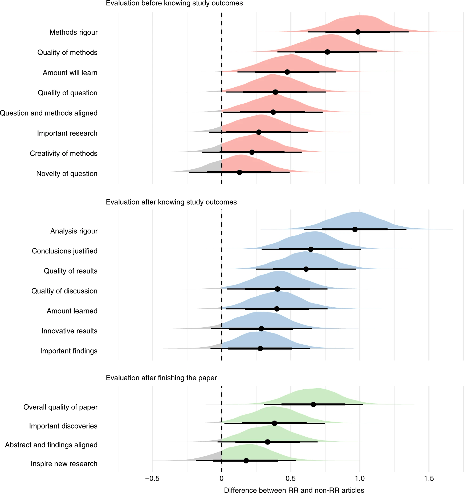
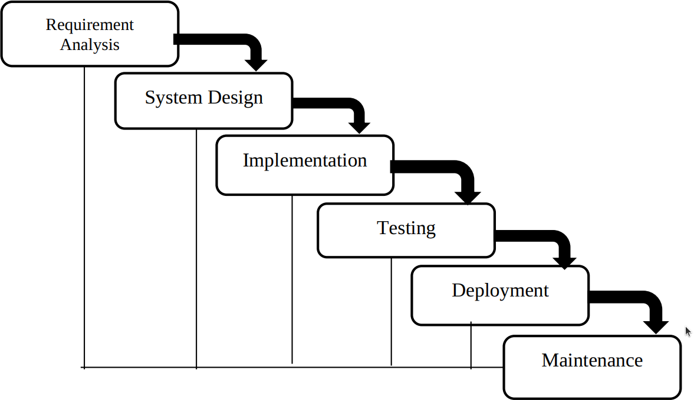
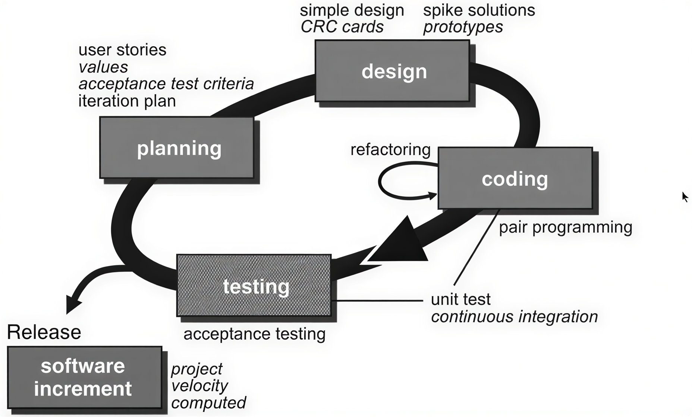

References¶
This page lists and sometimes summarizes the references used in this course.
[Alkaoud and Walcott, 2018]Alkaoud, Hessah, and Kristen R. Walcott. "Quality metrics of test suites in test-driven designed applications." International Journal of Software Engineering Applications (IJSEA) 2018 (2018).
Summary of [Alkaoud and Walcott, 2018]
TDD increases quality of the code.
[Allen and Mehler, 2019]Allen, Christopher, and David MA Mehler. "Open science challenges, benefits and tips in early career and beyond." PLoS biology 17.5 (2019): e3000246. Paper homepage
Summary of [Allen and Mehler, 2019]
This paper addresses challenges and misconceptions on adopting open science principles in a scientific career.
Below it shows figure 1 of this paper. It is shows that traditional literature, compared to registered reports, reports on null findings 4x less likely.

[Aniley et al., 2024]Aniley, D. Bitewe Continuous Integration, E. Alemneh Jalew, and G. Abeba Agegnehu. "Selection of software development life cycle models using machine learning approach." Int J Comput Appl 186 (2024): 36-43.
Summary of [Aniley et al., 2024]
This paper seems useful at first glance: the authors trained an algorithm to detect the best software development lifecycle for projects.
They recommend to use Agile software development models, but it is unclear where they base this on exactly.
-
[Barker, M., Chue Hong, N.P., Katz, D.S. et al. ]Barker, M., Chue Hong, N.P., Katz, D.S. et al. Introducing the FAIR Principles for research software. Sci Data 9, 622 (2022). Fair4RS -
[Beck, 2022]Beck, Kent. Test driven development: By example. Addison-Wesley Professional, 2022.
Summary of [Beck, 2022]
This is a book about TDD by the famous Kent Beck, the inventor of eXtreme programming.
[Beelders and du Plessis, 2015]Beelders, Tanya R., and Jean-Pierre L. du Plessis. "Syntax highlighting as an influencing factor when reading and comprehending source code." Journal of Eye Movement Research 9.1 (2015): 1. Paper homepage
Summary of [Beelders and du Plessis, 2015]
This study asked students to read code, with or without syntax highlighting. They found no significant difference in understanding.
[Bergström and Moberg, 2002]Bergström, Hans, and Anders Moberg. "Daily air temperature and pressure series for Uppsala (1722–1998)." Climatic change 53.1 (2002): 213-252. Paper homepage
Summary of [Bergström and Moberg, 2002]
This paper describes how the weather data, used in the learners project, has been obtained.
-
[Bertram, 2009]Bertram, Dane. "The social nature of issue tracking in software engineering." University of Calgary (2009). -
[Bhat and Nagappan, 2006]Bhat, Thirumalesh, and Nachiappan Nagappan. "Evaluating the efficacy of test-driven development: industrial case studies." Proceedings of the 2006 ACM/IEEE international symposium on Empirical software engineering. 2006.
Summary of [Bhat and Nagappan, 2006]
Doing TDD results in code that takes 15% longer to develop, with 2x higher code quality.
-
[Booch 2007]Grady Booch et al., Object-oriented analysis and design with applications - 3rd ed, Addison-wesley 2007. -
[Chacon and Straub, 2014]Chacon, Scott, and Ben Straub. Pro git. Springer Nature, 2014. Book homepage. PDF
Summary of [Chacon and Straub, 2014]
This is the book about Git. I (Richel) do not think this book is suitable for beginners, however.
It is open access.
[Chambers, 2019]Chambers, Chris. "What’s next for registered reports?." Nature 573.7773 (2019): 187-189. Comment (i.e. it is not a paper) homepage
Summary of [Chambers, 2019]
This comment (i.e. an article that introduces multiple papers) described the current and future challenges of registered reports.
It has a cartoon that illustrates the difference between traditional science and registered reports.
-
[Church, 1941]The Calculi of lambda-conversion, Princeton, Princeton University Press, Londos: Humphrey Milford Oxford University Press, 1941 -
[Coad et al., 1999]Coad, Peter and Luca, Jeff de and Lefebvre, Eric Java Modeling Color with Uml: Enterprise Components and Process with CD-ROM, Prentice Hall PTR, 1999 -
[Dijkstra, 1970]Notes On Structured Programming, T.H. - Report 70-WSK-03,Second edition April 1970 -
[Erdogmus and Morisio, 2005]Erdogmus, Hakan, Maurizio Morisio, and Marco Torchiano. "On the effectiveness of the test-first approach to programming." IEEE Transactions on software Engineering 31.3 (2005): 226-237.
Summary of [Erdogmus and Morisio, 2005]
TDD makes developers more productive and increases the quality of the code.
-
[Flor et al., 1991]Flor, Nick V.; Hutchins, Edwin L. (1991). "Analyzing Distributed Cognition in Software Teams: A Case Study of Team Programming During Perfective Software Maintenance". In Koenemann-Belliveau, Jürgen; Moher, Thomas G.; Robertson, Scott P. (eds.). Empirical Studies of Programmers: Fourth Workshop. Ablex. pp. 36–64. ISBN 978-0-89391-856-9. -
[Forsgren et al., 2018]Forsgren, Nicole, Jez Humble, and Gene Kim. Accelerate: The science of lean software and devops: Building and scaling high performing technology organizations. IT Revolution, 2018.
Summary of [Forsgren et al., 2018]
This book is written by some computer scientists, where they measure software development metrics to find out what really works.
Their conclusions are summed up in Appendix A, which has the following headers:
- Continuous Delivery
- Use version control for all production artifacts
- Automate your deployment process
- Implement Continuous Integration
- Use trunk-based development methods
- Implement test automation
- Support test data management
- Shift Left on Security (i.e. make security part of the software delivery)
- Implement Continuous Delivery (CD)
- Architecture
- Use a Loosely Coupled Architecture
- Architect for Empowered Teams
- Product and Process
- Gather and Implement Customer Feedback
- Make the Flow of Work Visible through the Value Stream
- Work in Small Batches
- Foster and Enable Team Experimentation
- Lean Management and Monitoring
- Have a Lightweight Change Approval Processes
- Monitor across Application and Infrastructure to Inform Business Decisions
- Check System Health Proactively
- Improve Processes and Manage Work with Work-In-Process (WIP) Limits
- Visualize Work to Monitor Quality and Communicate throughout the Team
- Cultural
- Support a Generative Culture
- Encourage and Support Learning
- Support and Facilitate Collaboration among Teams
- Provide Resources and Tools that Make Work Meaningful
- Support or Embody Transformational Leadership
-
[Fowler's website]Fowler's website -
[Gamma et al., 1995]Gamma, Erich, et al. "Elements of reusable object-oriented software." Design Patterns (1995). -
[George and Williams, 2004]George, Boby, and Laurie Williams. "A structured experiment of test-driven development." Information and software Technology 46.5 (2004): 337-342.
Summary of [George and Williams, 2004]
TDD takes 16% more time, with 18% more black-box tests that pass.
-
[Gunderloy, 2007]Gunderloy, Mike, ed. Painless project management with FogBugz. Berkeley, CA: Apress, 2007. -
[Hattie, 2012]Hattie, John. Visible learning for teachers: Maximizing impact on learning. Routledge, 2012. -
[Henney, 2010], Kevlin. 97 things every programmer should know: collective wisdom from the experts. " O'Reilly Media, Inc.", 2010.
Summary of [Henney, 2010]
This book gives 97 pieces of advice, as given by experts. Here is the table of content:
- Act with Prudence
- Apply Functional Programming Principles
- Ask "What Would the User Do?" (You Are Not the User)
- Automate Your Coding Standard
- Beauty Is in Simplicity
- Before You Refactor
- Beware the Share
- The Boy Scout Rule
- Check Your Code First Before Looking to Blame Others
- Choose Your Tools with Care
- Code in the Language of the Domain
- Code Is Design
- Code Layout Matters
- Code Reviews
- Coding with Reason
- A Comment on Comments
- Comment Only What the Code Cannot Say
- Continuous Learning
- Convenience Is Not an –ility
- Deploy Early and Often
- Distinguish Business Exceptions from Technical
- Do Lots of Deliberate Practice
- Domain-Specific Languages
- Don't Be Afraid to Break Things
- Don't Be Cute with Your Test Data
- Don't Ignore That Error!
- Don't Just Learn the Language, Understand its Culture
- Don't Nail Your Program into the Upright Position
- Don't Rely on "Magic Happens Here"
- Don't Repeat Yourself
- Don't Touch That Code!
- Encapsulate Behavior, Not Just State
- Floating-Point Numbers Aren't Real
- Fulfill Your Ambitions with Open Source
- The Golden Rule of API Design
- The Guru Myth
- Hard Work Does Not Pay Off
- How to Use a Bug Tracker
- Improve Code by Removing It
- Install Me
- Inter-Process Communication Affects Application Response Time
- Keep the Build Clean
- Know How to Use Command-line Tools
- Know Well More than Two Programming Languages
- Know Your IDE
- Know Your Limits
- Know Your Next Commit
- Large Interconnected Data Belongs to a Database
- Learn Foreign Languages
- Learn to Estimate
- Learn to Say "Hello, World"
- Let Your Project Speak for Itself
- The Linker Is Not a Magical Program
- The Longevity of Interim Solutions
- Make Interfaces Easy to Use Correctly and Hard to Use Incorrectly
- Make the Invisible More Visible
- Message Passing Leads to Better Scalability in Parallel Systems
- A Message to the Future
- Missing Opportunities for Polymorphism
- News of the Weird: Testers Are Your Friends
- One Binary
- Only the Code Tells the Truth
- Own (and Refactor) the Build
- Pair Program and Feel the Flow
- Prefer Domain-Specific Types to Primitive Types
- Prevent Errors
- The Professional Programmer
- Put Everything Under Version Control
- Put the Mouse Down and Step Away from the Keyboard
- Read Code
- Read the Humanities
- Reinvent the Wheel Often
- Resist the Temptation of the Singleton Pattern
- The Road to Performance Is Littered with Dirty Code Bombs
- Simplicity Comes from Reduction
- The Single Responsibility Principle
- Start from Yes
- Step Back and Automate, Automate, Automate
- Take Advantage of Code Analysis Tools
- Test for Required Behavior, Not Incidental Behavior
- Test Precisely and Concretely
- Test While You Sleep (and over Weekends)
- Testing Is the Engineering Rigor of Software Development
- Thinking in States
- Two Heads Are Often Better than One
- Two Wrongs Can Make a Right (and Are Difficult to Fix)
- Ubuntu Coding for Your Friends
- The Unix Tools Are Your Friends
- Use the Right Algorithm and Data Structure
- Verbose Logging Will Disturb Your Sleep
- WET Dilutes Performance Bottlenecks
- When Programmers and Testers Collaborate
- Write Code as If You Had to Support It for the Rest of Your Life
- Write Small Functions Using Examples
- Write Tests for People
- You Gotta Care About the Code
- Your Customers Do Not Mean What They Say
-
[ISO 12207:2017]ISO/IEC/IEEE 12207:2017 Systems and software engineering — Software life cycle processes -
[Jacobson, 1992]Jacobson, Ivar, et al. Object-Oriented Software Engineering, a usecase driven approach, Addison-wesley 1992 -
[Janzen and Saiedian, 2006]Janzen, David S., and Hossein Saiedian. "Test-driven learning: intrinsic integration of testing into the CS/SE curriculum." Acm Sigcse Bulletin 38.1 (2006): 254-258.
Summary of [Janzen and Saiedian, 2006]
TDD increases quality of the code.
[Jiménez et al., 2017]Jiménez, Rafael C., et al. "Four simple recommendations to encourage best practices in research software." F1000Research 6 (2017): ELIXIR-876. Paper homepage PDF
Summary of [Jiménez et al., 2017]
This open-access paper gives some best practices in research software.
These are the 4 recommendations:
- Make source code publicly accessible from day one
- Make software easy to discover by providing software metadata via a popular community registry
- Adopt a licence and comply with the licence of third-party dependencies
- Define clear and transparent contribution, governance and communication processes
-
[Jones et al., 2001]Jones JW, Keating BA, Porter CH. Approaches to modular model development. Agricultural Systems. 2001 Nov 1;70(2):421–43 -
[Khan, 2009]Khan, Iftikhar Ahmed. Towards a mood sensitive integrated development environment to enhance the performance of programmers. Diss. Brunel University, School of Information Systems, Computing and Mathematics, 2009.
Summary of [Khan, 2009]
This PhD thesis investigates both programmer mood and IDE. In the final chapter, the IDE is used to improve a programmer's mood when a negative emotion is detected. To improve the mood of a programmer, a video is shown to urge the developer to do ... exercises...?
[Kline and Seffah, 2005]Kline, Rex Bryan, and Ahmed Seffah. "Evaluation of integrated software development environments: Challenges and results from three empirical studies." International journal of human-computer studies 63.6 (2005): 607-627.
Summary of [Kline and Seffah, 2005]
This study states that IDEs are 'too often functionality-oriented and difficult to use, learn, and master'. The more experienced uses score the usability of an IDE higher.

The large standard deviations in the experts is explain by the low amount of experts: there were 7 experts (compared to a 100 beginners).
[Kroll et al., 2013]Kroll, Josiane, et al. "A systematic literature review of best practices and challenges in follow-the-sun software development." 2013 IEEE 8th International Conference on Global Software Engineering Workshops. IEEE, 2013. Paper homepage PDF
Summary of [Kroll et al., 2013]
This open-access paper is a literature review, tailored to best practices in
Follow-the-sun software development. Below is a table that shows
how many papers (n) recommend a specific practice.
n |
Best practice |
|---|---|
| 6 | Agile methods |
| 6 | Use of technology for knowledge sharing |
| 3 | Process documentation |
| 3 | Use of an FTP Server (or data repository) to exchange code and documents |
| 3 | Time window |
[Lakos, 1996]John Lakos. Large-Scale C++ Software Design. 1996. ISBN: 0-201-63362-0.
Summary of [Lakos, 1996]
This book discusses how top design large scale C++ software, with some advice that can by applied to all programming languages.
[Langr, 2013]Langr, Jeff. Better, Code, and Sleep Better. "Modern C++ Programming with Test-Driven Development." (2013).
Summary of [Langr, 2013]
In this book, Jeff Langr describes how to do TDD in C++.
The subtitle is: 'Code better. Sleep better'.
Chapter 11, 'Growing and sustaining TDD' provides for
- research on TDD
- the Bad Test Death spiral. Below is a possible path, where
the book provides ways to counter it.
- The team writes mostly integration tests
- The growing body of tests begins to pass the pain threshold
- Developers run the test suit less frequently or run subsets of the tests
- Developers delete tests
- Defects begin to increase
- The team, or management, questions the value of TDD
- The team abandons TDD
- The rules for pair programming
- Two programmers actively develop a solution
- The programmers typically sit side by side
- At any given time, one is the driver, the other is the navigator
- The programmers swap roles frequently, e.g. every time a test fails or passes
- Pairing sessions are short-lived, around 90 minutes, to increase knowledge (and hence, reduce risk) across the team
- Code katas
[Leau et al., 2012]Leau, Yu Beng, et al. "Software development life cycle AGILE vs traditional approaches." International Conference on Information and Network Technology. Vol. 37. No. 1. 2012.
Summary of [Leau et al., 2012]
This paper compares Agile versus traditional software development, with Table 1 (see below) sums up the findings:
| Parameter | Agile | Traditional |
|---|---|---|
| User requirement | Iterative acquisition | Detailed user requirements are well-defined before coding/implementation |
| Rework cost | Low | High |
| Development direction | Readily changeable | Fixed |
| Testing | On every iteration | After coding phase completed |
| Customer involvement | High | Low |
| Extra quality required for developers | Interpersonal skills & basic business knowledge | Nothing in particular |
| Suitable Project scale | Low to medium-scaled | Large-scaled |
[Li and Ahmed, 2023]Li, Jiawei, and Iftekhar Ahmed. "Commit message matters: Investigating impact and evolution of commit message quality." 2023 IEEE/ACM 45th International Conference on Software Engineering (ICSE). IEEE, 2023. Paper homepage
Summary of [Li and Ahmed, 2023]
This paper is about the impact and evolution of commit message quality.
They define a good commit message as such:
it should have both the summary of the code change (What) and the motivation/reason behind it (Why).
[Liberty, 2001]Jesse Liberty. Sams teach yourself C++ in 24 hours. ISBN: 0-672-32224-2.
Summary of [Liberty, 2001]
This is a friendly to read book about C++, with some advice that applies to all programming languages.
[Madeyski et al., 2010]Madeyski, Lech, and Gestión de sistemas de información. Test-driven development: An empirical evaluation of agile practice. Heidelberg: Springer, 2010.
Summary of [Madeyski et al., 2010]
TDD helps better modularisation.
-
[Martin, 2007]Martin, Robert C. "Professionalism and test-driven development." IEEE Software 24.3 (2007): 32-36. -
[Martin, 2009]Martin, Robert C. Clean code: a handbook of agile software craftsmanship. Pearson Education, 2009.
Summary of [Martin, 2009]
This book is written by the famous Robert C. Martin and gives advice how to develop software best.
-
[Martin, 2011]Martin, Robert C. The clean coder: a code of conduct for professional programmers. Pearson Education, 2011. -
[Martin, 2017]Martin, Robert C. "Clean architecture." 12 Sep. 2017, -
[Mayr, 2005]Mayr, Herwig. Projekt Engineering: Ingenieurmäßige Softwareentwicklung in Projektgruppen. Hanser Verlag, 2005. -
[Morales et al., 2019]Morales, Jenny, et al. "How “friendly” integrated development environments are?." International Conference on Human-Computer Interaction. Cham: Springer International Publishing, 2019. Paper homepage
Summary of [Morales et al., 2019]
This study asks students to evaluate how friendly different IDEs are to use.
Note that it misquotes [Beelders and du Plessis, 2015],
where this paper insinuates that syntax highlighting (as
typically provided by IDEs) is a good thing. The misquoted
paper, however, found that there is no difference between black-and-white
code versus colored syntax highlighted code.
[Munafò et al., 2017]Munafò, Marcus R., et al. "A manifesto for reproducible science." Nature human behaviour 1.1 (2017): 0021. Paper homepage
Summary of [Munafò et al., 2017]
This paper describes practices that hinder reproducibility of scientific findings, as well as measures to increase reproducibility of scientific findings, such as using registered reports.
-
[Nagappan et al., 2008]Nagappan, Nachiappan, et al. "Realizing quality improvement through test driven development: results and experiences of four industrial teams." Empirical Software Engineering 13 (2008): 289-302. -
[Ordoñez-Pacheco et al., 2021]Ordoñez-Pacheco, Rodrigo, Karen Cortes-Verdin, and Jorge Octavio Ocharán-Hernández. "Best practices for software development: A systematic literature review." International Conference on Software Process Improvement. Springer, Cham, 2021. Note: this paper does not exist. It is not part of the book 'Advances in Intelligent Informatics', volume 320, ISBN 978-3-319-11217-6. -
[Pastrana et al., 2025]Pastrana, Manuel, et al. "Best Practices Evidenced for Software Development Based on DevOps and Scrum: A Literature Review." Applied Sciences 15.10 (2025): 5421. Paper homepage. PDF
Summary of [Pastrana et al., 2025]
This open-access paper is a literature review paper on Scrum and DevOps.
Box 11 shows the benefits of Scrum and DevOps practices. Here is an adapted version of box 11:
| Benefits | Improvement Observed |
|---|---|
| Scrum adoption | Actively involved stakeholders |
| . | Transparent communication channels |
| . | Increased team collaboration |
| . | Improved predictability |
| . | Creation of a collaborative culture |
| . | Continuous improvement |
| . | Constant quality measurement or concurrent testing |
| DevOps adoption | Early and continuous feedback |
| . | Productivity increased by 20% |
| . | Deployment time decreased by 30% |
| Faster release cycles | Time to market decreased by 25% |
| . | Incident resolution time decreased by 40% |
| . | Quality deliverable |
| . | Early and continuous feedback |
| Continuous integration | Quality deliverable |
| . | Time to market decreased by 25% |
| . | Incident resolution time decreased by 40% |
| . | Transparent communication channels |
| Automated testing | Test execution speed increased by 35% |
| . | Defect detection increased by 18% |
| Security automation | Security vulnerabilities decreased by 30% |
| . | response time decreased by 50% |
| Agile transformation | The development cycle decreased by 25% |
| . | Project success rates increased by 18% |
I removed the conclusion to [Sravani et al., 2023] ([117] in the paper)
as that paper does not supply these numbers at all.
I used the Doc2Lang image to table converter to convert the image to a table.
-
[PEP 8]Van Rossum, Guido, Barry Warsaw, and Nick Coghlan. "PEP 8–style guide for python code." Python. org 1565 (2001): 28. -
[Perez-Riverol et al., 2016]Perez-Riverol, Yasset, et al. "Ten simple rules for taking advantage of Git and GitHub." PLoS computational biology 12.7 (2016): e1004947. Paper homepage PDF
Summary of [Perez-Riverol et al., 2016]
This open-access paper shares 10 simple rules to take advantage of git
and GitHub:
- Rule 1: Use GitHub to Track Your Projects
- Rule 2: GitHub for Single Users, Teams, and Organizations
- Rule 3: Developing and Collaborating on New Features: Branching and Forking
- Rule 4: Naming Branches and Commits: Tags and Semantic Versions
- Rule 5: Let GitHub Do Some Tasks for You: Integrate
- Rule 6: Let GitHub Do More Tasks for You: Automate
- Rule 7: Use GitHub to Openly and Collaboratively Discuss, Address, and Close Issues
- Rule 8: Make Your Code Easily Citable, and Cite Source Code!
- Rule 9: Promote and Discuss Your Projects: Web Page and More
- Rule 10: Use GitHub to Be Social: Follow and Watch
[Ram, 2013]Ram, Karthik. "Git can facilitate greater reproducibility and increased transparency in science." Source code for biology and medicine 8.1 (2013): 7. Paper homepage PDF
Summary of [Ram, 2013]
This open-access paper supplies these 8 use cases for Git in science.
- Lab notebook
- Facilitating collaboration
- Backup and failsafe against data loss
- Freedom to explore new ideas and methods
- Mechanism to solicit feedback and reviews
- Increase transparency and verifiability
- Managing large data
- Lowering barriers to reuse
-
[Rumbaugh, 1991]Rumbaugh et. al, Object-oriented modeling and design, Prentice-Hall, Inc. 1991 -
[Schwartz and Gurung, 2012]Schwartz, Beth M., and Regan AR Gurung. Evidence-based teaching for higher education. American Psychological Association, 2012. -
[Serban et al., 2020]Serban, Alex, et al. "Adoption and effects of software engineering best practices in machine learning." Proceedings of the 14th ACM/IEEE International Symposium on Empirical Software Engineering and Measurement (ESEM). 2020. Paper homepage. PDF
Summary of [Serban et al., 2020]
This open-access article shows the importance of a practice and how much it is adopted, in the context of a machine learning project:

Note that there are 2x a 28, where 29 is absent. I assume that the 28 to the right, with and orange circle and an importance of 0.2 had to be 29. I assume so, as the 28 with a green triangle should indeed be a green triangle. This has been clearly annotated :-)
These are the top 10 most important practices, after which I show the full table:
n |
Title |
|---|---|
| 25 | Log Production Predictions with the Model's Version and Input Data |
| 27 | Work Against a Shared Backlog |
| 21 | Continuously Monitor the Behaviour of Deployed Models |
| 18 | Use Continuous Integration |
| 20 | Automate Model Deployment |
| 16 | Use Versioning for Data, Model, Configurations and Training Scripts |
| 26 | Use A Collaborative Development Platform |
| 29 | Enforce Fairness and Privacy |
| 17 | Run Automated Regression Tests |
| 12 | Enable Parallel Training Experiments |
Here is the full table:
n |
Title |
|---|---|
| 1 | Use Sanity Checks for All External Data Sources |
| 2 | Check that Input Data is Complete, Balanced and Well Distributed |
| 3 | Write Reusable Scripts for Data Cleaning and Merging |
| 4 | Ensure Data Labelling is Performed in a Strictly Controlled Process |
| 5 | Make Data Sets Available on Shared Infrastructure (private or public) |
| 6 | Share a Clearly Defined Training Objective within the Team |
| 7 | Capture the Training Objective in a Metric that is Easy to Measure and Understand |
| 8 | Test all Feature Extraction Code |
| 9 | Assign an Owner to Each Feature and Document its Rationale |
| 10 | Actively Remove or Archive Features That are Not Used |
| 11 | Peer Review Training Scripts |
| 12 | Enable Parallel Training Experiments |
| 13 | Automate Hyper-Parameter Optimisation and Model Selection |
| 14 | Continuously Measure Model Quality and Performance |
| 15 | Share Status and Outcomes of Experiments Within the Team |
| 16 | Use versioning for Data, Model, Configurations and Training Scripts |
| 17 | Run Automated Regression Tests |
| 18 | Use Continuous Integration |
| 19 | Use Static Analysis to Check Code Quality |
| 20 | Automate Model Deployment |
| 21 | Continuously Monitor the Behaviour of Deployed Models |
| 22 | Enable Shadow Deployment |
| 23 | Perform Checks to Detect Skews between Models |
| 24 | Enable Automatic Roll Backs for Production Models |
| 25 | Log Production Predictions with the Model's Version and Input Data |
| 26 | Use A Collaborative Development Platform |
| 27 | Work Against a Shared Backlog |
| 28 | Communicate, Align, and Collaborate With Multidisciplinary Team Members |
| 29 | Enforce Fairness and Privacy |
I used the Doc2Lang image to table converter to convert the image to a table
[Soderberg et al., 2021]Soderberg, Courtney K., et al. "Initial evidence of research quality of registered reports compared with the standard publishing model." Nature Human Behaviour 5.8 (2021): 990-997. Paper homepage
Summary of [Soderberg et al., 2021]
This paper shows that registered reports result in better science, compared to 'regular' papers.
Here is figure 3 of that paper:

In this experiment, researches selected 'regular' papers and registered reports. The researchers then asked reviewers to score papers on the feature shown in the figure, where these reviewers were unaware of this experimental variable.
For all features (including 'Creativity'), registered reports scored higher.
-
[Sravani et al., 2023]Sravani, Diyyala, et al. "Python security in devOps: Best practices for secure coding, configuration management, and continuous testing and monitoring." 2023 4th International Conference on Electronics and Sustainable Communication Systems (ICESC). IEEE, 2023. -
[Stieler and Bauer, 2023]Stieler, Fabian, and Bernhard Bauer. "Git workflow for active learning-a development methodology proposal for data-centric AI projects." (2023). Paper homepage. PDF
Summary of [Stieler and Bauer, 2023]
This open-access paper applies [Serban et al., 2020]
for a data-centric AI project called GW4AL.
It is irrelevant for us.
[Stodden and Miguez, 2014]Stodden, Victoria, and Sheila Miguez. "Best practices for computational science: Software infrastructure and environments for reproducible and extensible research." (2014). Paper homepage. PDF
Summary of [Stodden and Miguez, 2014]
This open-access paper suggests these best practices about how to setup your infrastructure to achieve reproducible research:
- Open licensing should be used for data and code
- Workflow tracking should be carried out during the research process.
- Data must be available and accessible
- Code and methods must be available and accessible
- All 3rd party data and software should be cited
-
[Stroustrup, 1997]Bjarne Stroustrup. The C++ Programming Language (3rd edition). 1997. ISBN: 0-201-88954-4. -
[Stroustrup, 1998]Stroustrup B. What is “Object-oriented Programming”? Software, IEEE. 1988 Jun 1;5:10–20. -
[Stroustrup, 2013]Bjarne Stroustrup. The C++ Programming Language (4th edition). 2013. ISBN: 978-0-321-56384-2. -
[Stroustrup and Sutter, 2017]Stroustrup, Bjarne, and Herb Sutter. "C++ Core Guidelines (2017)." Website. (Cited on pages 100 and 103) (2015). -
[Sutter and Alexandrescu, 2004]Herb Sutter, Andrei Alexandrescu. C++ coding standards: 101 rules, guidelines, and best practices. 2004. ISBN: 0-32-111358-6. Chapter 68: 'Assert liberally to document internal assumptions and invariants'
Summary of [Sutter and Alexandrescu, 2004]
This C++ classic gives 101 rules in C++ software development. Even though this course uses Python, some advice applies to all programming languages.
| Idx | Rule |
|---|---|
| 0 | Don't sweat the small stuff (Or: Know what not to standardize.) |
| 1 | Compile cleanly at high warning levels |
| 2 | Use an automated build system |
| 3 | Use a version control system |
| 4 | Invest in code reviews |
| 5 | Give one entity one cohesive responsibility |
| 6 | Correctness, simplicity, and clarity come first |
| 7 | Know when and how to code for scalability |
| 8 | Don't optimize prematurely |
| 9 | Don't pessimize prematurely |
| 10 | Minimize global and shared data |
| 11 | Hide information |
| 12 | Know when and how to code for concurrency |
| 13 | Ensure resources are owned by objects. Use explicit RAII and smart pointers. |
| 14 | Prefer compileand link-time errors to run-time errors |
| 15 | Use const proactively |
| 16 | Avoid macros |
| 17 | Avoid magic numbers |
| 18 | Declare variables as locally as possible |
| 19 | Always initialize variables |
| 20 | Avoid long functions. Avoid deep nesting |
| 21 | Avoid initialization dependencies across compilation units |
| 22 | Minimize definitional dependencies. Avoid cyclic dependencies |
| 23 | Make header files self-sufficient |
| 24 | Always write internal #include guards. Never write external #include guards. |
| 25 | Take parameters appropriately by value, (smart) pointer, or reference |
| 26 | Preserve natural semantics for overloaded operators |
| 27 | Prefer the canonical forms of arithmetic and assignment operators |
| 28 | Prefer the canonical form of ++ and -- . Prefer calling the prefix forms |
| 29 | Consider overloading to avoid implicit type conversions |
| 30 | Avoid overloading &&, [the or operator], or , (comma) |
| 31 | Don't write code that depends on the order of evaluation of function arguments |
| 32 | Be clear what kind of class you're writing |
| 33 | Prefer minimal classes to monolithic classes |
| 34 | Prefer composition to inheritance |
| 35 | Avoid inheriting from classes that were not designed to be base classes |
| 36 | Prefer providing abstract interfaces |
| 37 | Public inheritance is substitutability. Inherit, not to reuse, but to be reused |
| 38 | Practice safe overriding |
| 39 | Consider making virtual functions nonpublic, and public functions nonvirtual |
| 40 | Avoid providing implicit conversions |
| 41 | Make data members private, except in behaviourless aggregates (C-style structs) |
| 42 | Don't give away your internals |
| 43 | Pimpl judiciously |
| 44 | Prefer writing nonmember nonfriend functions |
| 45 | Always provide new and delete together |
| 46 | If you provide any class-specific new, provide all of the standard forms (plain, in-place, and nothrow) |
| 47 | Define and initialize member variables in the same order |
| 48 | Prefer initialization to assignment in constructors |
| 49 | Avoid calling virtual functions in constructors and destructors |
| 50 | Make base class destructors public and virtual, or protected and nonvirtual |
| 51 | Destructors, deallocation, and swap never fail |
| 52 | Copy and destroy consistently |
| 53 | Explicitly enable or disable copying |
| 54 | Avoid slicing. Consider Clone in stead of copying in base classes |
| 55 | Prefer the canonical form of assignment |
| 56 | Whenever it makes sense, provide a no-fail swap (and provide it correctly) |
| 57 | Keep a type and its nonmember function interface in the same namespace |
| 58 | Keep types and functions in separate namespaces unless they're specifically intended to work together |
| 59 | Don't write namespace usings in a header file or before an #include |
| 60 | Avoid allocating and deallocating memory in different modules |
| 61 | Don't define entities with linkage in a header file |
| 62 | Don't allow exceptions to propagate across module boundaries |
| 63 | Use sufficiently portable types in a module's interface |
| 64 | Blend static and dynamic polymorphism judiciously |
| 65 | Customize intentionally and explicitly |
| 66 | Don't specialize function templates |
| 67 | Don't write unintentionally nongeneric code |
| 68 | Assert liberally to document internal assumptions and invariants |
| 69 | Establish a rational error handling policy, and follow it strictly |
| 70 | Distinguish between errors and non-errors |
| 71 | Design and write error-safe code |
| 72 | Prefer to use exceptions to report errors |
| 73 | Throw by value, catch by reference |
| 74 | Report, handle, and translate errors appropriately |
| 75 | Avoid exception specifications. |
| 76 | Use vector by default. Otherwise, choose an appropriate container |
| 77 | Use vector and string instead of arrays |
| 78 | Use vector (and string::c_str) to exchange data with non-C++ APIs |
| 79 | Store only values and smart pointers in containers |
| 80 | Prefer push back to other ways of expanding a sequence |
| 81 | Prefer range operations to single-element operations |
| 82 | Use the accepted idioms to really shrink capacity and really erase elements |
| 83 | Use a checked STL implementation |
| 84 | Prefer algorithm calls to handwritten loops |
| 85 | Use the right STL search algorithm |
| 86 | Use the right STL sort algorithm |
| 87 | Make predicates pure functions |
| 88 | Prefer function objects over functions as algorithm and comparer arguments |
| 89 | Write function objects correctly |
| 90 | Avoid type switching; prefer polymorphism |
| 91 | Rely on types, not on representations |
| 92 | Avoid using reinterpret_cast |
| 93 | Avoid using static_cast on pointers |
| 94 | Avoid casting away const |
| 95 | Don't use C-style casts |
| 96 | Don't memcpy or memcmp non-PODs |
| 97 | Don't use unions to reinterpret representation. |
| 98 | Don't use varargs (ellipsis) |
| 99 | Don't use invalid objects. Don't use unsafe functions |
| 100 | Don't treat arrays polymorphically |
[Thomas and Hunt, 2019]Thomas, David, and Andrew Hunt. The Pragmatic Programmer: your journey to mastery. Addison-Wesley Professional, 2019.
Summary of [Thomas and Hunt, 2019]
This book is a classic, with 100 tips. Here is an overview of the (sometimes cryptically phrased) tips, as well as the page of the book where you can find it explained.
| Tip | Page | Tip |
|---|---|---|
| 1 | xxi | Care About Your Craft |
| 2 | xxi | Think! About Your Work |
| 3 | 2 | You Have Agency |
| 4 | 4 | Provide Options, Don't Make Lame Excuses |
| 5 | 7 | Don't Live with Broken Windows |
| 6 | 9 | Be a Catalyst for Change |
| 7 | 10 | Remember the Big Picture |
| 8 | 12 | Make Quality a Requirements Issue |
| 9 | 15 | Invest Regularly in Your Knowledge Portfolio |
| 10 | 17 | Critically Analyze What You Read and Hear |
| 11 | 20 | English is Just Another Programming Language |
| 12 | 22 | It's Both What You Say and the Way You Say It |
| 13 | 23 | Build Documentation In, Don't Bolt It On |
| 14 | 28 | Good Design Is Easier to Change Than Bad Design |
| 15 | 31 | DRY - Don't Repeat Yourself |
| 16 | 38 | Make It Easy to Reuse |
| 17 | 40 | Eliminate Effects Between Unrelated Things |
| 18 | 48 | There Are No Final Decisions |
| 19 | 49 | Forgo Following Fads |
| 20 | 51 | Use Tracer Bullets to Find the Target |
| 21 | 57 | Prototype to Learn |
| 22 | 60 | Program Close to the Problem Domain |
| 23 | 66 | Estimate to Avoid Surprises |
| 24 | 70 | Iterate the Schedule with the Code |
| 25 | 75 | Keep Knowledge in Plain Text |
| 26 | 79 | Use the Power of Command Shells |
| 27 | 81 | Achieve Editor Fluency |
| 28 | 85 | Always Use Version Control |
| 29 | 89 | Fix the Problem, Not the Blame |
| 30 | 89 | Don't Panic |
| 31 | 91 | Failing Test Before Fixing Code |
| 32 | 92 | Read the Damn Error Message |
| 33 | 95 | select Isn't Broken |
| 34 | 96 | Don't Assume It - Prove It |
| 35 | 98 | Learn a Text Manipulation Language |
| 36 | 102 | You Can't Write Perfect Software |
| 37 | 107 | Design with Contracts |
| 38 | 113 | Crash Early |
| 39 | 115 | Use Assertions to Prevent the Impossible |
| 40 | 118 | Finish What You Start |
| 41 | 121 | Act Locally |
| 42 | 126 | Take Small Steps - Always |
| 43 | 127 | Avoid Fortune-Telling |
| 44 | 131 | Decoupled Code Is Easier to Change |
| 45 | 132 | Tell, Don't Ask |
| 46 | 134 | Don't Chain Method Calls |
| 47 | 136 | Avoid Global Data |
| 48 | 136 | If It's Important Enough To Be Global, Wrap It in an API |
| 49 | 149 | Programming Is About Code, But Programs Are About Data |
| 50 | 153 | Don't Hoard State; Pass It Around |
| 51 | 161 | Don't Pay Inheritance Tax |
| 52 | 162 | Prefer Interfaces to Express Polymorphism |
| 53 | 163 | Delegate to Services, Has-A Trumps Is-A |
| 54 | 165 | Use Mixins to Share Functionality |
| 55 | 166 | Parameterize Your App Using External Configuration |
| 56 | 171 | Analyze Workflow to Improve Concurrency |
| 57 | 174 | Shared State Is Incorrect State |
| 58 | 180 | Random Failures Are Often Concurrency Issues |
| 59 | 182 | Use Actors For Concurrency Without Shared State |
| 60 | 189 | Use Blackboards to Coordinate Workflow |
| 61 | 194 | Listen to Your Inner Lizard |
| 62 | 200 | Don't Program by Coincidence |
| 63 | 207 | Estimate the Order of Your Algorithms |
| 64 | 208 | Test Your Estimates |
| 65 | 212 | Refactor Early, Refactor Often |
| 66 | 214 | Testing Is Not About Finding Bugs |
| 67 | 216 | A Test Is the First User of Your Code |
| 68 | 218 | Build End-To-End, Not Top-Down or Bottom Up |
| 69 | 221 | Design to Test |
| 70 | 223 | Test Your Software, or Your Users Will |
| 71 | 224 | Use Property-Based Tests to Validate Your Assumptions |
| 72 | 234 | Keep It Simple and Minimize Attack Surfaces |
| 73 | 235 | Apply Security Patches Quickly |
| 74 | 242 | Name Well; Rename When Needed |
| 75 | 244 | No One Knows Exactly What They Want |
| 76 | 245 | Programmers Help People Understand What They Want |
| 77 | 246 | Requirements Are Learned in a Feedback Loop |
| 78 | 247 | Work with a User to Think Like a User |
| 79 | 248 | Policy Is Metadata |
| 80 | 251 | Use a Project Glossary |
| 81 | 254 | Don't Think Outside the Box - Find the Box |
| 82 | 259 | Don't Go into the Code Alone |
| 83 | 259 | Agile Is Not a Noun; Agile Is How You Do Things |
| 84 | 264 | Maintain Small Stable Teams |
| 85 | 266 | Schedule It to Make It Happen |
| 86 | 268 | Organize Fully Functional Teams |
| 87 | 271 | Do What Works, Not What's Fashionable |
| 88 | 273 | Deliver When Users Need It |
| 89 | 274 | Use Version Control to Drive Builds, Tests, and Releases |
| 90 | 275 | Test Early, Test Often, Test Automatically |
| 91 | 275 | Coding Ain't Done 'Til All the Tests Run |
| 92 | 277 | Use Saboteurs to Test Your Testing |
| 93 | 278 | Test State Coverage, Not Code Coverage |
| 94 | 278 | Find Bugs Once |
| 95 | 279 | Don't Use Manual Procedures |
| 96 | 281 | Delight Users, Don't Just Deliver Code |
| 97 | 282 | Sign Your Work |
| 98 | 286 | First, Do No Harm |
| 99 | 287 | Don't Enable Scumbags |
| 100 | 287 | It's Your Life. Share it. Celebrate it. Build it. AND HAVE FUN! |
[Tian et al, 2022]Tian, Yingchen, et al. "What makes a good commit message?." Proceedings of the 44th International Conference on Software Engineering. 2022. Paper homepage
Summary of [Tian et al, 2022]
This paper describes what makes a good commit message, classifying good commit messages in 'What' and 'Why' categories.
It does describe reasonably clear what is a bad commit message, however, it not give any clear guidance on what is a good commit message.
-
[Uncle Bob, 2024]YouTube video 'Is Test Driven Development Slow?' by Uncle Bob -
[Visser et al., 2016]Visser, Joost, et al. Building software teams: Ten best practices for effective software development. " O'Reilly Media, Inc.", 2016.
Summary of [Visser et al., 2016]
This closed-access paper has the following table of content:
- Derive Metrics from Your Measurement Goals
- Make Definition of Done Explicit
- Control Code Versions and Development Branches
- Control Development, Test, Acceptance, and Production Environments
- Automate Tests
- Use Continuous Integration
- Automate Deployment
- Standardize the Development Environment
- Manage Usage of Third-Party Code
- Document Just Enough
-
[Wickham, 2019]Wickham, Hadley. Advanced R. Chapman and Hall/CRC, 2019. -
[Williams and Kessler, 2000]Williams, Laurie; Kessler, Robert R.; Cunningham, Ward; Jeffries, Ron (2000). "Strengthening the case for pair programming" (PDF). IEEE Software. 17 (4): 19–25. CiteSeerX 10.1.1.33.5248. doi:10.1109/52.854064. -
[Wilson et al., 2014]Wilson, Greg, et al. "Best practices for scientific computing." PLoS biology 12.1 (2014): e1001745. Paper homepage. PDF
Summary of [Wilson et al., 2014]
This paper summarizes best practices. Here is (a slightly adapted) box 1 from that paper:
n |
Theme | Recommendatation |
|---|---|---|
| 1 | Write programs for people, not computers | A program should not require its readers to hold more than a handful of facts in memory at once. |
| . | . | Make names consistent, distinctive, and meaningful. |
| . | . | Make code style and formatting consistent. |
| 2 | Let the computer do the work | Make the computer repeat tasks. |
| . | . | Save recent commands in a file for re-use. |
| . | . | Use a build tool to automate workflows. |
| 3 | Make incremental changes | Work in small steps with frequent feedback and course correction. |
| . | . | Use a version control system. |
| . | . | Put everything that has been created manually in version control. |
| 4 | Don't repeat yourself (or others) | Every piece of data must have a single authoritative representation in the system. |
| . | . | Modularize code rather than copying and pasting. |
| . | . | Re-use code instead of rewriting it. |
| 5 | Plan for mistakes | Add assertions to programs to check their operation. |
| . | . | Use an off-the-shelf unit testing library. |
| . | . | Turn bugs into test cases. |
| . | . | Use a symbolic debugger. |
| 6 | Optimize software only after it works correctly | Use a profiler to identify bottlenecks. |
| . | . | Write code in the highest-level language possible. |
| 7 | Document design and purpose, not mechanics | Document interfaces and reasons, not implementations. |
| . | . | Refactor code in preference to explaining how it works. |
| . | . | Embed the documentation for a piece of software in that software. |
| 8 | Collaborate | Use pre-merge code reviews. |
| . | . | Use pair programming when bringing someone new up to speed and when tackling particularly tricky problems. |
| . | . | Use an issue tracking tool. |
[Wilson et al., 2017]Wilson, Greg, et al. "Good enough practices in scientific computing." PLoS computational biology 13.6 (2017): e1005510. Paper homepage. PDF
Summary of [Wilson et al., 2017]
This paper summarizes best practices that are good enough. Here is (a slightly adapted) box 1 from that paper:
n |
Theme | Recommendatation |
|---|---|---|
| 1 | Data management | Save the raw data. |
| . | . | Ensure that raw data are backed up in more than one location. |
| . | . | Create the data you wish to see in the world. |
| . | . | Create analysis-friendly data. |
| . | . | Record all the steps used to process data. |
| . | . | Anticipate the need to use multiple tables, and use a unique identifier for every record. |
| . | . | Submit data to a reputable DOI-issuing repository so that others can access and cite it. |
| 2 | Software | Place a brief explanatory comment at the start of every program. |
| . | . | Decompose programs into functions. |
| . | . | Be ruthless about eliminating duplication. |
| . | . | Always search for well-maintained software libraries that do what you need. |
| . | . | Test libraries before relying on them. |
| . | . | Give functions and variables meaningful names. |
| . | . | Make dependencies and requirements explicit. |
| . | . | Do not comment and uncomment sections of code to control a program's behavior. |
| . | . | Provide a simple example or test data set. |
| . | . | Submit code to a reputable DOI-issuing repository. |
| 3 | Collaboration | Create an overview of your project. |
| . | . | Create a shared "to-do" list for the project. |
| . | . | Decide on communication strategies. |
| . | . | Make the license explicit. |
| . | . | Make the project citable. |
| 4 | Project organization | Put each project in its own directory, which is named after the project. |
| . | . | Put text documents associated with the project in the doc directory. |
| . | . | Put raw data and metadata in a data directory and files generated during cleanup and analysis in a results directory. |
| . | . | Put project source code in the src directory. |
| . | . | Put external scripts or compiled programs in the bin directory. |
| . | . | Name all files to reflect their content or function. |
| 5 | Keeping track of changes | Back up (almost) everything created by a human being as soon as it is created. |
| . | . | Keep changes small. |
| . | . | Share changes frequently. |
| . | . | Create, maintain, and use a checklist for saving and sharing changes to the project. |
| . | . | Store each project in a folder that is mirrored off the researcher's working machine. |
| . | . | Add a file called CHANGELOG.txt to the project's docs subfolder. |
| . | . | Copy the entire project whenever a significant change has been made. |
| . | . | Use a version control system. |
| 6 | Manuscripts | Write manuscripts using online tools with rich formatting, change tracking, and reference management. |
| . | . | Write the manuscript in a plain text format that permits version control. |
[Yas et al., 2023]Yas, Qahtan M., Abdulbasit Alazzawi, and Bahbibi Rahmatullah. "A comprehensive review of software development life cycle methodologies: Pros, cons, and future directions." Iraqi Journal for Computer Science and Mathematics 4.4 (2023): 14.
Summary of [Yas et al., 2023]
This paper tries to collect and categorize all software development life cycles. The primary grouping is between traditional and agile models.
Figure 3 depicts the waterfall model:

Figure 8 depicts the eXtreme programming model:

-
[Yuan et al., 2014]Yuan, Ding, et al. "Simple testing can prevent most critical failures: An analysis of production failures in distributed data-intensive systems." 11th USENIX Symposium on Operating Systems Design and Implementation (OSDI 14). 2014. -
[Zen of Python]Zen Of Python: 'Errors should never pass silently'